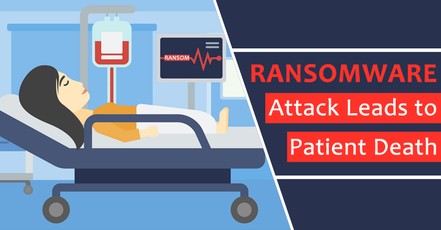

Hospital Under attack
With great powers comes great responsibilities -- by cyber criminals
Hey Everyone, in today’s blog we will witness the cyber attacks on Medical Industry affecting many lives and economy as well. so lets begin…
As for hackers Medical industry is 2nd favorite target to hack on after NASA being at 1st position 🙂 We have seen many incidents when cyber attacks has affected Tens of Millions of People and Millions of Dollars which caused due to low or non security implemented. I really can’t understand why this Organizations like to pay Millions of dollars in Ransom, other then paying very less to hackers like us and secure their system. They are fools, I feel uncomfortable to give my private data to this hospital when I go to medical checkup by seeing how easily it can be stolen.
In resent news, we have came across many such attacks on hospitals, but then frequency had increased from 10 attacks per days 100 attacks every hour since the lockdown. It’s not only the responsibility of Hospital to keep us alive but also to keep us & our data safe from such attacks.

We see, Federal agencies had warned of “an increased and imminent cyber-crime threat” to health care providers, particularly from a gang that uses a strand of ransomware called Ryuk. If you are a reader of my blogs you are likely to know what ransomware is, if not click here.
A recent wave of ransomware attacks has infected more hospitals than previously known. Many health care specialist confirmed that the company had been infected with the Ryuk Ransomware, their computers were inaccessible, halting radiation treatments for cancer patients as well.
In conclusion I would say, the weakest chain of security is humans, the more we spend on educating our staff and community of people around us the less we pay in Ransom.
Thank you for reading, see you guys in next blog. Till that have a good day and babye. :)
© hackkeencyber